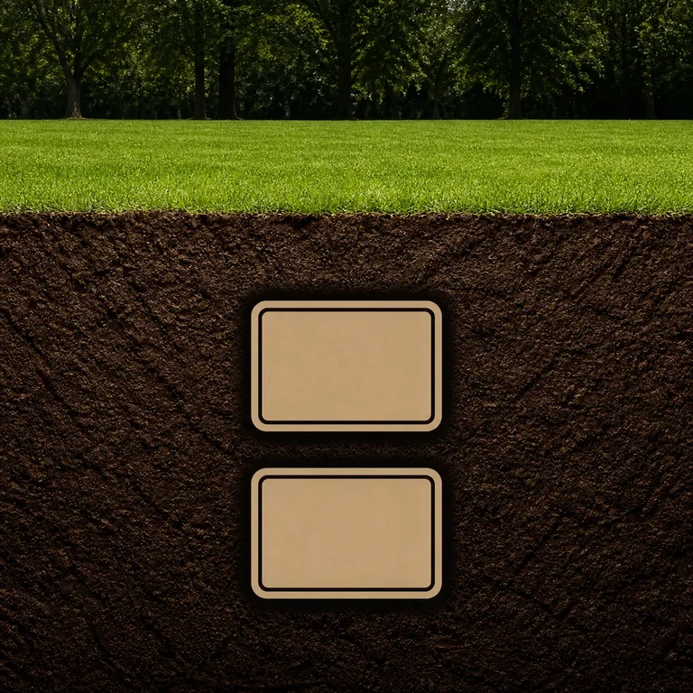
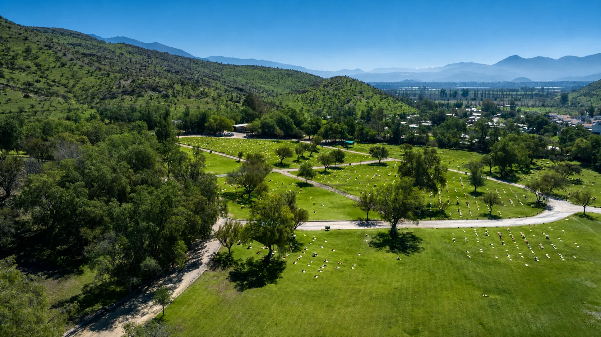
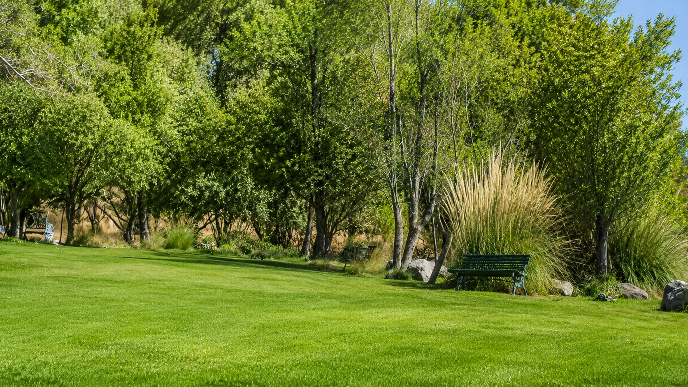
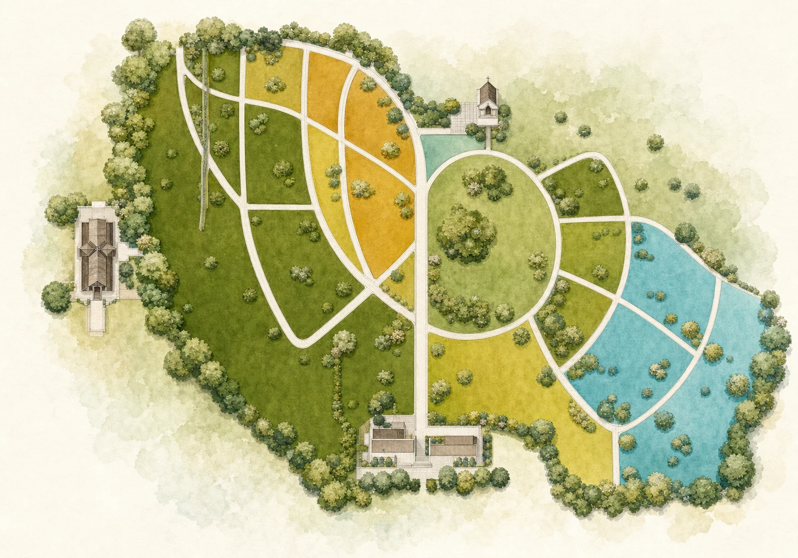
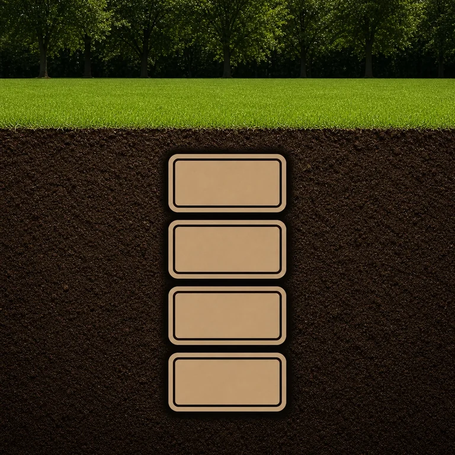
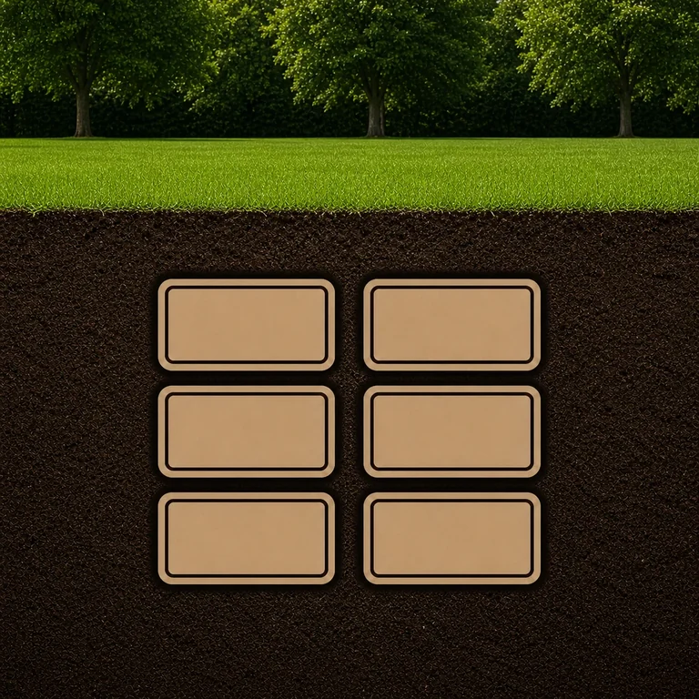
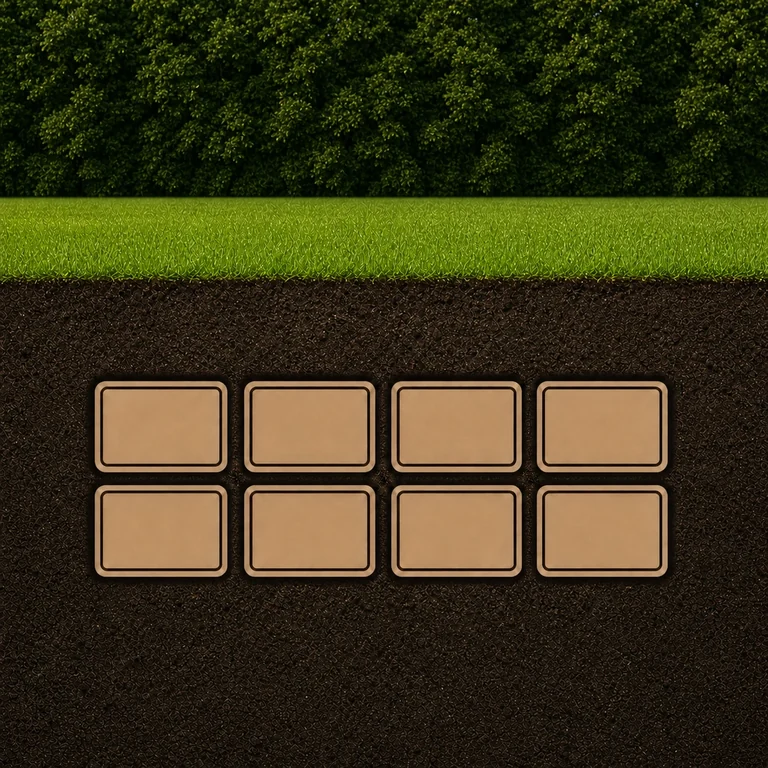
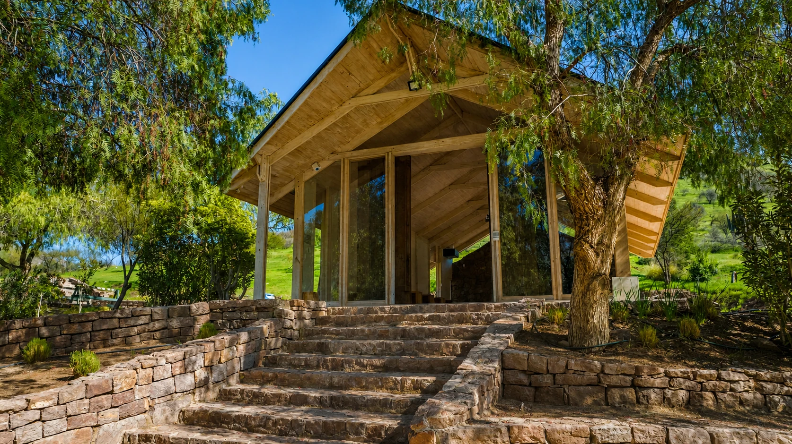
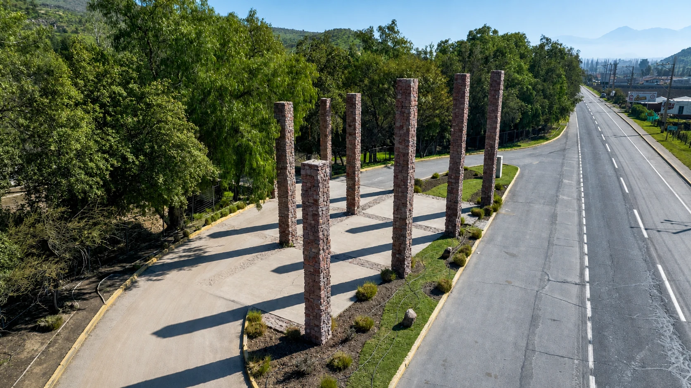

2 capacidades
Consultar 2 capacidades
Pareja o familia pequeña
Una alternativa compacta para una planificación familiar acotada.

Sepulturas familiares perpetuas en Rinconada de Los Andes
Elige capacidad, sector y forma de pago con orientación clara. Alternativas familiares de 2 a 8 capacidades y pago hasta en 72 cuotas.
*Sujeto a evaluación y condiciones comerciales vigentes.
Empieza por aquí
Cada alternativa abre una orientación distinta. Selecciona la que más se acerca a lo que necesitas.
Por qué elegir Parque de Auco
Antes de decidir, tendrás claridad sobre capacidad, ubicación, disponibilidad y condiciones comerciales. El proceso se explica paso a paso.
Hablar con un ejecutivoConoce el parque
Explora algunos de los entornos disponibles. La ubicación y disponibilidad se confirman al cotizar.

Sector Roble
Sepulturas familiares perpetuas de 4 y 8 capacidades.
Consultar disponibilidadUbícate antes de visitar
Explora los sectores y puntos de atención. Usa los controles para ampliar el plano y selecciona un marcador para ver su información.

Compara capacidades
Revisa el enfoque de cada alternativa. El sector, las medidas y la disponibilidad se confirman con un ejecutivo.

Una alternativa compacta para una planificación familiar acotada.

Una opción versátil disponible en distintos sectores del parque.

Mayor capacidad para una planificación familiar de largo plazo.

La alternativa de mayor capacidad, disponible en sectores específicos.
Representaciones referenciales. La configuración final depende del sector y la disponibilidad.
¿No sabes qué capacidad elegir?Un ejecutivo puede compararlas contigo según tu grupo familiar.
Comparar por WhatsAppAuco Legado
Dos conceptos paisajísticos que incorporan naturaleza, piedra y espacios de permanencia familiar.
Jardines Familiares
Jardines privados de 4 o 6 capacidades con acceso delimitado y equipamiento familiar.

Capilla velatoriaServicios del parque
Orientación para coordinar servicios y complementar la alternativa familiar elegida.
Facilidades de pago
Un ejecutivo te explicará el pie, plazo y condiciones aplicables antes de que tomes una decisión.
Guía rápida
Cuatro pasos para solicitar orientación y confirmar disponibilidad.
Nos permite priorizar el contacto.
Te mostraremos las opciones aplicables.
El equipo indicará la documentación necesaria.
Continúa por llamada, WhatsApp o visita.
Cotización personalizada
Puedes conversar por WhatsApp, solicitar contacto o coordinar una visita al parque.

Preguntas frecuentes
Es una alternativa familiar de uso permanente, sujeta al contrato y a las condiciones vigentes que se explican antes de cotizar.
Hay alternativas de 2, 4, 6 y 8 capacidades, según el sector y la disponibilidad del parque.
Un ejecutivo te informará el pie, número de cuotas y condiciones vigentes aplicables a la alternativa elegida.
Sí. Puedes conversar directamente con un ejecutivo para recibir orientación y revisar alternativas.
Sí. Puedes coordinar una visita para conocer los sectores, accesos y servicios disponibles.
Sí. El equipo orienta tanto consultas de compra anticipada como solicitudes que requieren atención prioritaria.
En Carretera San Martín 7000, comuna de Rinconada, provincia de Los Andes.
Orientación personalizada